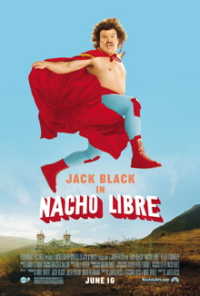

Nacho Libre is a comedy film that always manages to put a smile on my face. Starring Jack Black, this movie is about a monastery cook who secretly dreams of becoming a luchador. The humor and quirky storyline make it an absolute classic for me. You can learn more about the film on its Wikipedia page.
Good Will Hunting is one of the most inspiring movies I have ever seen. The movie stars Matt Damon as Will, a genius struggling to find direction in his life, and Robin Williams as his mentor. The storyline is emotional, thought-provoking, and leaves you reflecting long after watching it. You can read more about it on its Wikipedia page.

Cars is an animated movie that I absolutely love. Produced by Pixar Animation Studios and released by Walt Disney Pictures, this movie tells the story of a race car named Lightning McQueen who finds meaning in friendship and teamwork. It’s a heartwarming story suitable for all ages. For more information, visit the Wikipedia page.